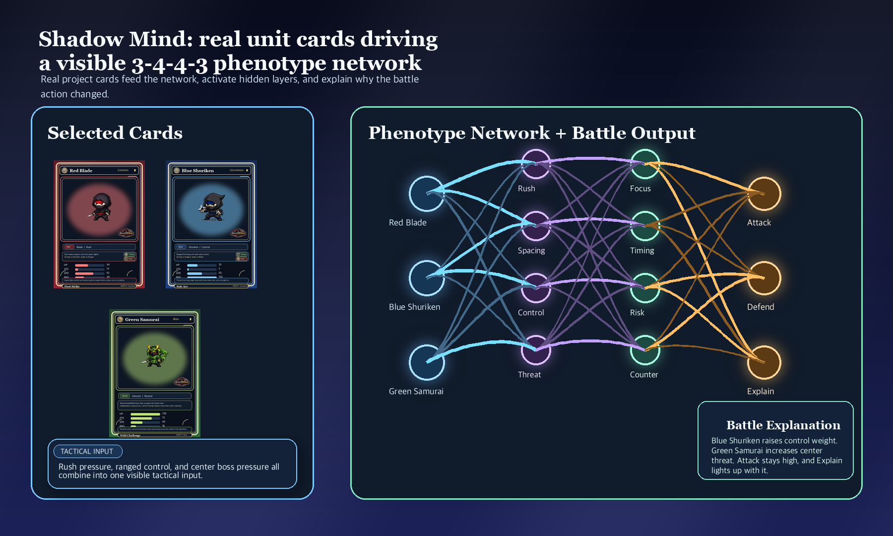
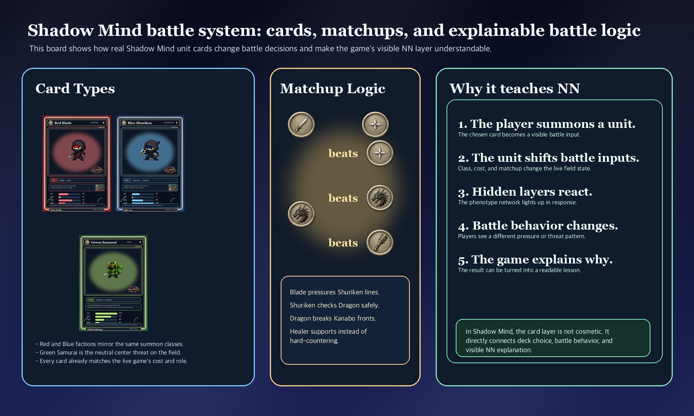
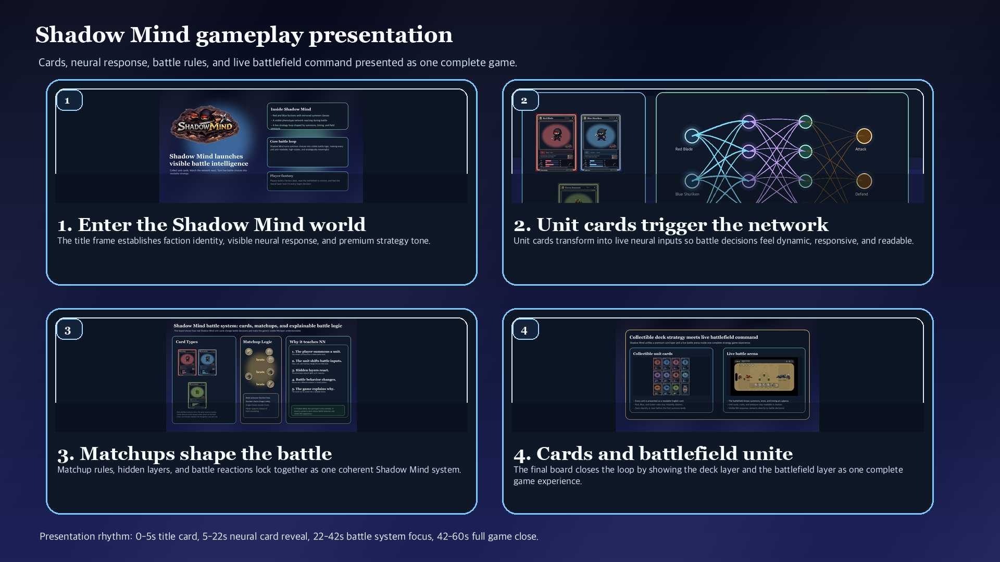
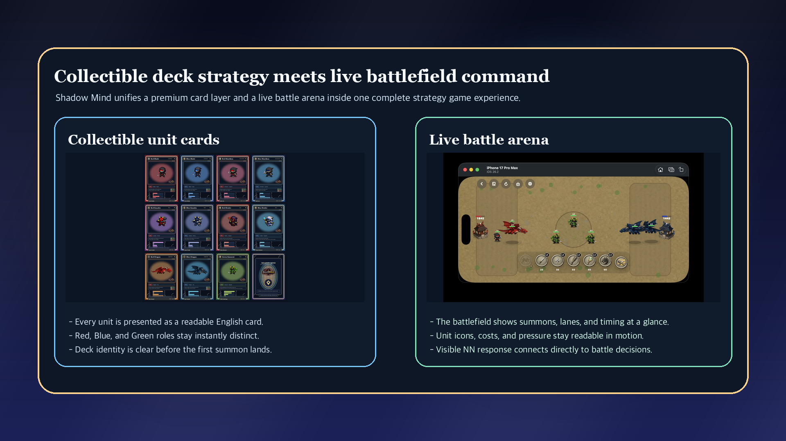

Q1. 이 아이디어를 떠올린 배경은 무엇인가요?
AI와 신경망은 이제 누구나 알아야 할 기술이 되었지만, 초급 학습자에게는 여전히 어렵고 추상적입니다. 수식과 코드 중심의 설명은 진입장벽이 높고, 단순 게임형 콘텐츠는 재미는 있어도 왜 그런 결과가 나왔는지를 이해로 연결하기 어렵습니다. ShadowMind는 이 간극에서 출발했습니다. 플레이어가 카드 덱을 구성하고 유닛을 배치하며 전투를 진행하는 동안, 선택한 카드가 어떤 입력이 되고 신경망이 어떻게 반응하며 전투 결과가 왜 달라지는지를 한 화면에서 볼 수 있게 만드는 것이 핵심입니다. 즉 ShadowMind는 AI를 따로 설명하는 게임이 아니라, 플레이하는 순간 NN의 입력, 판단, 출력 구조가 자연스럽게 읽히는 학습형 전략 게임입니다.
Q2. 누구의 어떤 문제를 해결하고자 하나요?
ShadowMind의 1차 대상은 AI와 코딩을 처음 배우는 청소년, 비전공 학습자, 그리고 이를 수업에 도입하려는 교육기관과 강사입니다. 이들은 AI 학습의 필요성은 느끼지만, 신경망이 실제로 어떻게 판단하고 반응하는지 체감할 기회가 부족합니다. 기존 온라인 강의는 개념 전달에는 강하지만 몰입이 낮고, 일반 게임은 몰입은 높지만 학습 구조가 남지 않는 경우가 많습니다. ShadowMind는 카드 선택, 유닛 소환, 전투 결과를 NN 시각화와 연결해 이 문제를 해결합니다. 학습자는 전략 선택의 결과를 바로 확인하며 AI 판단 구조를 이해하고, 교육기관은 수업형 콘텐츠, 교사용 운영도구, 학습 리포트로 확장 가능한 AI 리터러시 프로그램을 운영할 수 있습니다.
Q3. 이 아이디어를 어떻게 실현하고 싶으신가요?
ShadowMind는 카드 전략 게임의 몰입감과 설명 가능한 NN 시각화를 결합한 AI 학습 서비스로 구현하고자 합니다. 초기 버전에서는 사용자가 카드 덱을 구성하고, 유닛을 소환하고, 전투를 진행하는 핵심 플레이 루프를 완성합니다. 이 과정에서 각 카드의 속성, 상성, 배치 선택이 NN의 입력값으로 연결되고, 은닉층 반응과 전투 결과가 시각적으로 표현됩니다. 플레이어는 어떤 선택이 전투 결과를 바꿨는지를 게임 안에서 바로 확인하며 신경망의 입력-반응-출력 구조를 익히게 됩니다. 사업화는 교육기관용 AI 리터러시 콘텐츠로 확장하는 방향이 적합합니다. 1단계는 플레이 가능한 핵심 게임 프로토타입과 제출용 비주얼, 짧은 소개 영상으로 서비스 이해도를 높이는 것입니다. 2단계는 학교, 학원, 방과후 수업 등에서 활용할 수 있는 미션형 커리큘럼을 설계하고, 강사용 수업 가이드와 학습자 활동지를 붙입니다. 3단계는 학습완주율, 개념 이해도, 카드·전투 선택 분석 등을 보여주는 교사용 대시보드와 학습 리포트를 제공합니다. 수익모델은 일반 게임 과금보다 교육기관 라이선스, 교사용 운영도구 구독, 수업 패키지 공급, 워크북·교구 판매 중심으로 설계합니다. 이렇게 하면 ShadowMind는 단순한 AI 게임 앱이 아니라, 전략적 플레이를 통해 Physical AI와 NN 개념을 체험하게 만드는 교육 서비스로 포지셔닝할 수 있습니다.
Q4. 제출 이미지 구성은 어떻게 되나요?
이미지는 첫 화면에서 ShadowMind의 게임 정체성을 보여주고, 이어 카드가 NN 입력으로 연결되는 장면, 카드 상성과 전투 규칙이 학습 구조가 되는 시스템 보드, 카드 선택에서 학습 피드백까지 이어지는 서비스 흐름, 실제 전장과 카드 전략이 결합된 완성형 게임 보드 순서로 구성합니다.




